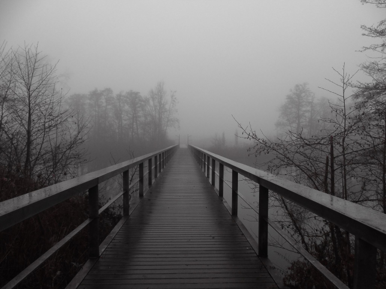

Mijn naam is Chrissy Bril, ik ben 23 jaar en ik ben een derdejaars student Communicatie en Multimedia Design aan de Haagse Hogeschool.
Naast grafisch ontwerpen heb ik ook een grote liefde voor fotografie.
Heb je vragen of wil je gewoon graag contact met me opnemen? Vul dan het contactformulier in of mail direct naar cbril311@outlook.com
